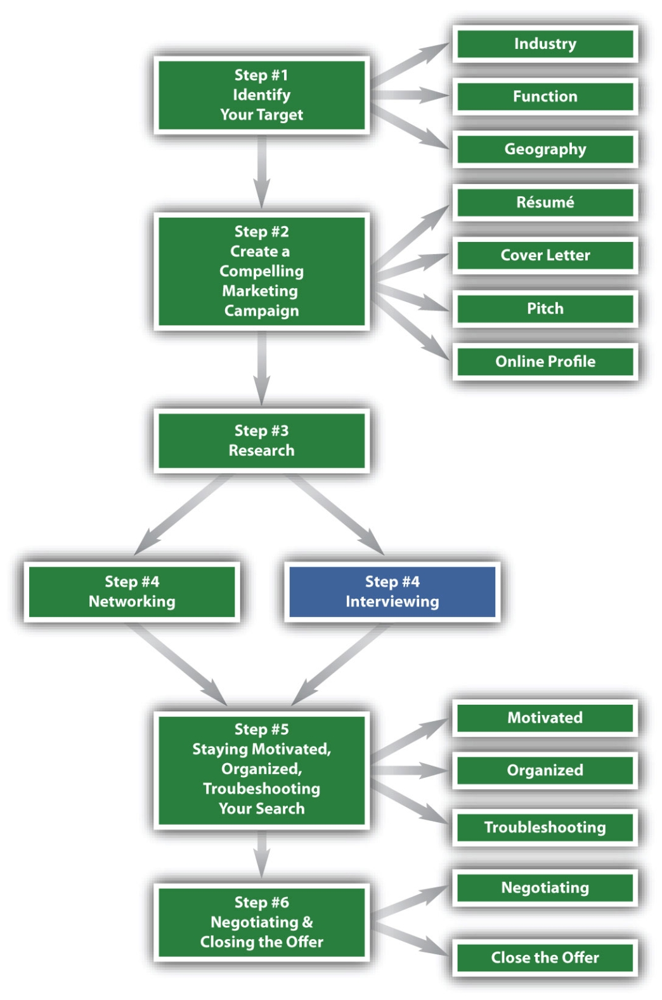

Figure 8.1 The Six-Step Job Search Process—Step 4 Continued
You Can Become an Exceptional Interviewee
You have now completed three full steps of your job search and half of the fourth step. You have accomplished four things:
The second half of step 4 focuses on the interview process. Networking and interviewing are paired for two reasons:
Each interaction with a company representative is a mini-interview. Future employers are constantly evaluating your behavior at every stage of the job search. For example, when they call you to discuss the potential of having a face-to-face interview, they note how you answer the phone and how you follow up. When you e-mail them information regarding your candidacy, they evaluate your writing ability and communication skills. While an interview is a formal meeting to evaluate your candidacy, the real interview begins much earlier.
An interview can be defined as a conversation between two or more people in which the interviewer asks questions to obtain information from the interviewee. A better definition might be an exchange of information between the interviewer and interviewee to assess if a match exists between a job’s requirements and a person’s skills and abilities.
The second definition is much more proactive in the case of the interviewee. As an interviewee, you should not passively answer questions, but should employ strategies so you are presented in the best possible light. As an interviewee, you also are responsible for highlighting your strengths in the interview and giving answers that are detailed and results oriented. This chapter will give you such strategies.
Key strategies for a successful interview will be explored in depth in this chapter, but as an overview, you should have three goals:
Know Yourself. Know your strengths well enough to match them to relevant job descriptions. If you have strong analytical skills, then analyst or accounting positions may be of interest. If you have strong client-service skills, perhaps a career in retail would be a great match. Knowing yourself allows you to target positions accurately, which then results in successful interviews and suitable positions.
Know Your Résumé. You should be intimately aware of every detail on your résumé, including all past projects and the quantifiable results of those projects. If you are stumpedNot knowing what to say when asked about a particular item or action. on a question about your résumé, then it’s almost guaranteed that you will not get a second-round interview.
Know the Company, the Position, and the Industry. The third job search strategy focuses on research. You should know extensive amounts of information about the industry, the company, and the position before the interview and be knowledgeable enough to speak fluently about the company, its goals, and its ranking among its competition.
Structure of a General Interview. An ordinary thirty-minute interview could have the following structure:
Although the preceding structure is the most common, you shouldn’t expect this at all times. Interviews can veer from this typical structure for several reasons:
Your Interview Strategy—Prepare and Practice. Multiple strategies will be reviewed to increase the chances of success during and after an interview, but the main strategy focuses on preparation. Prepare ahead of time and control what you can, so if something happens to throw you off your game, you will be much better prepared to deal with it.
The more prepared you are, the better you will perform. It’s a universal truth that works for any skill or sport. If you play softball, you will be a better softball player if you practice as much as possible. It’s the same with interview skills: the more you practice, the better your skills will be. Many other strategies can help you prepare, including knowing the types of interviews, interviewers, the types of questions you will be asked, and the types of questions you can ask. Being prepared will strengthen your interview skills, which, in turn, will strengthen your chance of receiving a job offer.
The Interviewer. The interviewer has a very important job: they need to find the very best talent. Interviewers build their reputations on the quality of the individuals they hire. The stakes are high for you as well as the interviewer.
Preparation on your part is critical as well. You probably hope every interviewer you meet is skilled, but that may not always be the case. If your interviewer is not an expert in the interview process, you should be prepared to highlight your strengths no matter what questions are asked. Again, preparation is vitally important. This chapter will give you the best strategies to prepare for meeting any interviewer, regardless of their skill level.